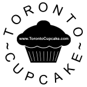
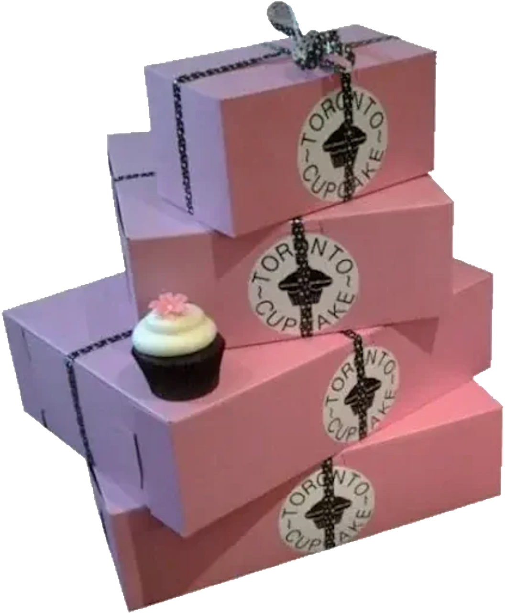
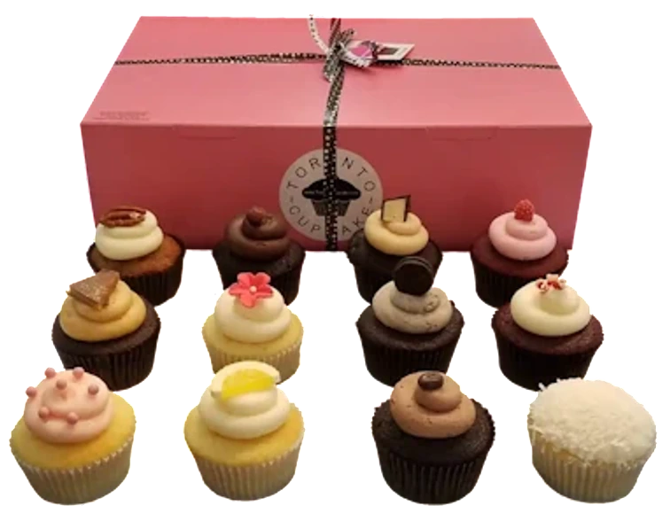
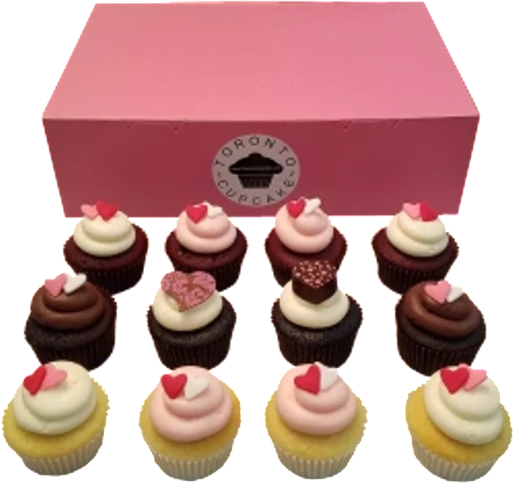

Baked fresh daily
Cupcakes are baked fresh every day to guarantee maximum flavor and quality.

0 CartToronto and GTA delivery
Welcome to Toronto Cupcake, your go-to destination for freshly baked cupcakes in Toronto and the Greater Toronto Area. Corporate events, birthdays, weddings, holidays, custom cupcakes, and sweet treat delivery all land in one pink-box experience.



baked fresh daily $3.75 each / $41.50 dozenWhy Toronto Cupcake
Cupcakes are baked fresh every day to guarantee maximum flavor and quality.
Corporate events, weddings, birthdays, holidays, or just because.
Logos, themed designs, colours, messages, and custom stands.
Delivery across Toronto, the GTA, and beyond.
Custom and corporate
Toronto Cupcake creates branded cupcakes with edible logos, themed designs, corporate colours, and reliable delivery for product launches, customer appreciation, and team celebrations.
Plan a branded orderNative page content
Baked Fresh Daily: Our cupcakes are baked fresh every day to guarantee maximum flavor and quality.
Perfect for Any Occasion: Whether it's a corporate event, wedding, birthday, or just because, our cupcakes are sure to impress.
Custom Designs Available: Need something unique? We offer custom cupcake designs to match your event's theme or personal taste.
Fast and Reliable Delivery: We deliver across Toronto, the GTA, and beyond, ensuring your cupcakes arrive fresh and on time.
Our cupcake offerings change with the seasons, so there's always something new to try! Check out our Always Available Cupcakes for classic flavors, or explore our Holiday Cupcakes and Special Event Cupcakes for something truly unique.
Make your celebrations extra special with Toronto Cupcake. We offer a wide variety of cupcakes that are perfect for any event, from corporate meetings to weddings and birthdays. Our signature pink box delivery service is available across Toronto and the GTA, making it easy to enjoy our delicious cupcakes wherever you are.
Ready to indulge in Toronto's best cupcakes? Order online today and have fresh, delicious cupcakes delivered right to your door. Whether you need cupcakes for a party or just want to treat yourself, Toronto Cupcake has you covered!
Ready when you are